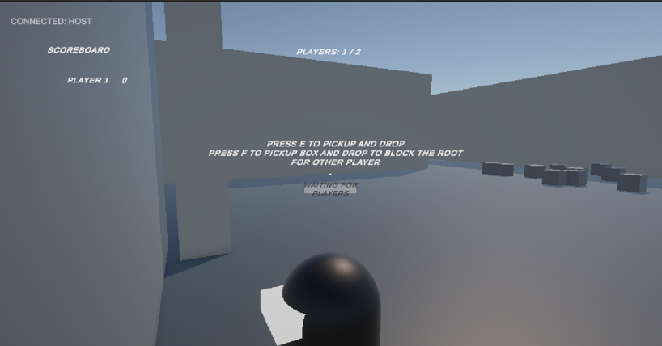
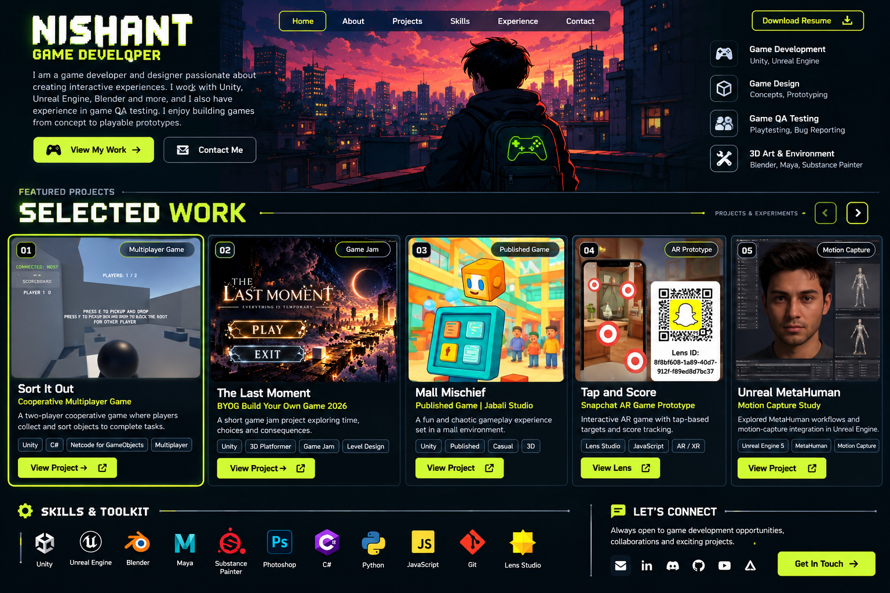
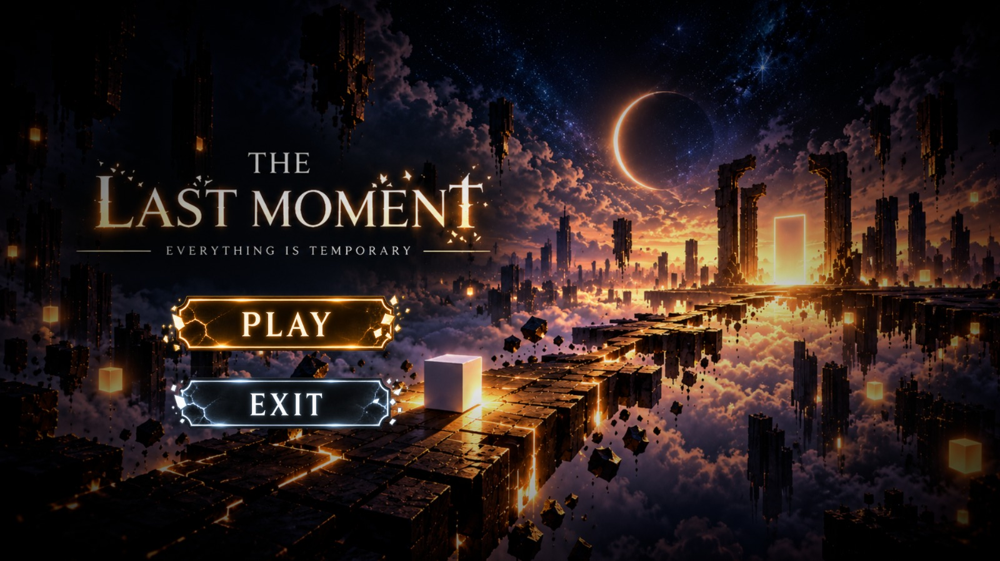
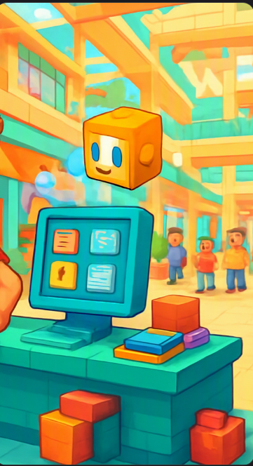
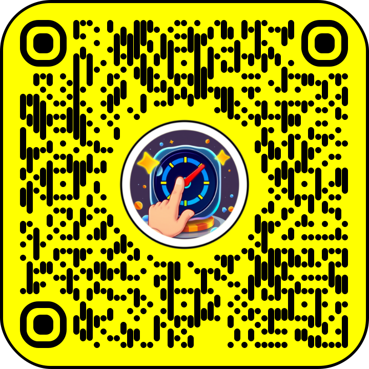

MULTIPLAYER GAME01 / UNITY
Sort It Out
Cooperative Multiplayer Game
A two-player cooperative game where players collect and sort objects to complete tasks together.
UnityC#Netcode for GameObjectsMultiplayer
View Project ↗GAME DEVELOPMENT • GAME QA • 3D
I'm Nishant, an entry-level Unity developer and game QA candidate. I enjoy turning concepts into playable prototypes, creating interactive systems, and improving games through testing and iteration.

A LITTLE ABOUT ME
Entry-level Unity developer and game QA candidate with hands-on academic and personal project experience in 2D/3D gameplay, AR prototypes, C#, and physics-based interaction. Familiar with functional and regression testing, bug tracking, and performance profiling. Interested in building reliable experiences and supporting game teams through clear testing and iteration.
FEATURED PROJECTS

MULTIPLAYER GAME01 / UNITY
Cooperative Multiplayer Game
A two-player cooperative game where players collect and sort objects to complete tasks together.

GAME JAM02 / GAME JAM
BYOG Build Your Own Game 2026
A short 3D platformer game-jam submission exploring time, choices, and consequences through movement, obstacles, and disappearing platforms.

PUBLISHED GAME03 / PUBLISHED
Jabali Studio
A fun, chaotic gameplay experience set in a mall environment. Published through the linked Jabali profile.

AR PROTOTYPE04 / LENS STUDIO
Snapchat AR Game Prototype
An interactive AR game prototype with tap-based targets and score tracking. Scan the Snapchat Lens QR code to try it. Lens ID: 8f8bf608-1a89-40d7-912f-f89ed8d7bc37.
05 / UNREAL ENGINE
Motion Capture Study
Explored MetaHuman workflows and motion-capture integration in Unreal Engine, from face identity setup to a full character rig.
3D CHARACTER PIPELINE
This study documents a progression from a visual reference to a complete MetaHuman character. The collage below presents the stages in order.

Start with a clear, front-facing reference portrait. Use it to study facial proportions, skin tone, eye spacing, nose shape, lips, and overall silhouette.
Build or refine a 3D head structure in a modelling workflow. Compare the model against the reference from a consistent front view and adjust proportions before moving forward.
Bring the head into the MetaHuman identity workflow and align the image/model to the face. Check landmark placement and the fit of the facial topology.
Refine the identity solve and inspect the generated face. Review key likeness features such as brow shape, eye placement, cheek volume, jawline, and skin appearance.
Generate the full character with body and rig. Verify the overall character, body proportions, and readiness for animation or motion-capture testing.
Portfolio note: This is a workflow study, not a claim of production-ready facial capture. Add a short screen recording or animation clip when available to demonstrate the rig in motion.
TOOLS I USE
Game development — Unity, C#, Unreal Engine 5, Godot, Lens Studio
QA — Functional testing, regression testing, bug tracking, performance profiling
3D & UI — Blender, UV mapping, Photoshop, spritesheets, UI design
Additional — C++, Python, JavaScript, AR/XR, physics-based mechanics
CURRENTLY LEARNING
Chitkara University · Game Development Specialization
LET'S CONNECT
Open to entry-level game development, QA opportunities, collaborations, and exciting projects.
✉ vstnishant154@gmail.com
☎ +91 8708329800 · India